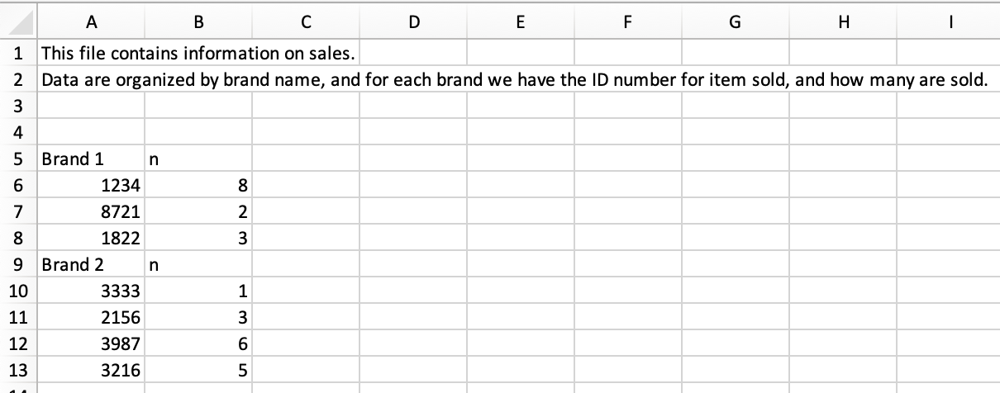

library(tidyverse)
library(readxl)AE 07: Data import
Suggested answers
Application exercise
Answers
Packages
We will use the following two packages in this application exercise.
- tidyverse: For data import, wrangling, and visualization.
- readxl: For importing data from Excel.
Nobel winners
Demo: Load the data from the
datafolder and assign it tonobel. Confirm that this new object appears in your Environment tab.nobel <- read_csv("data/nobel.csv")Rows: 935 Columns: 26 ── Column specification ──────────────────────────────────────────────────────── Delimiter: "," chr (21): firstname, surname, category, affiliation, city, country, gender,... dbl (3): id, year, share date (2): born_date, died_date ℹ Use `spec()` to retrieve the full column specification for this data. ℹ Specify the column types or set `show_col_types = FALSE` to quiet this message.
Your turn (4 minutes): Split the data into two – nobel laureates in STEM fields (
categoryshould be Physics, Medicine, Chemistry, or Economics) and nobel laureates in non-STEM fields. Name these two new objects appropriately. Remember: Use concise and evocative names. Confirm that these new objects appear in your Environment tab and that the sum of the number of observations in the two new data frames add to the number of observations in the original data frame.# define stem fields stem_fields <- c("Physics", "Medicine", "Chemistry", "Economics") # stem laureates nobel_stem <- nobel %>% filter(category %in% stem_fields) # non-steam laureates nobel_nonstem <- nobel %>% filter(!(category %in% stem_fields))Demo: Write out the two new datasets you created into the
datafolder:write_csv(nobel_stem, file = "data/nobel-stem.csv") write_csv(nobel_nonstem, file = "data/nobel-nonstem.csv")
Sales
Sales data are stored in an Excel file that looks like the following:

Demo: Read in the Excel file called
sales.xlsxfrom thedata-raw/folder such that it looks like the following.
sales <- read_excel( "data/sales.xlsx", skip = 3, col_names = c("id", "n") )Demo - Stretch goal: Manipulate the sales data such such that it looks like the following.

sales |> mutate( is_brand_name = str_detect(id, "Brand"), brand = if_else(is_brand_name, id, NULL) ) |> fill(brand) |> filter(!is_brand_name) |> select(brand, id, n)# A tibble: 7 × 3 brand id n <chr> <chr> <chr> 1 Brand 1 1234 8 2 Brand 1 8721 2 3 Brand 1 1822 3 4 Brand 2 3333 1 5 Brand 2 2156 3 6 Brand 2 3987 6 7 Brand 2 3216 5
Question: Why should we bother with writing code for reading the data in by skipping columns and assigning variable names as well as cleaning it up in multiple steps instead of opening the Excel file and editing the data in there to prepare it for a clean import?
Because the code allows us to struggle once and re-use for future datasets and leaves a transparent trail of our modifications while manipulating the data in Excel directly is neither reproducible nor reusable.